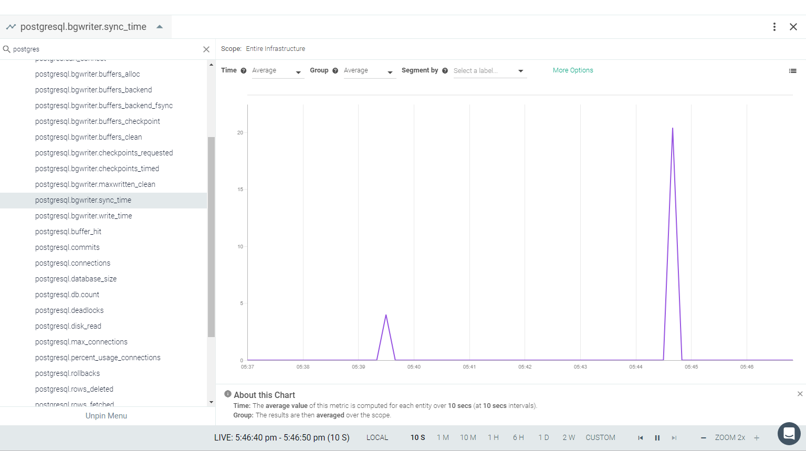
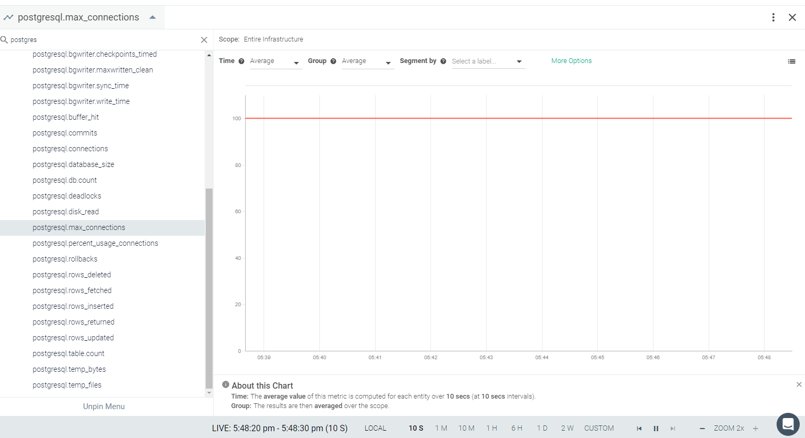

PostgreSQL
PostgreSQL is a powerful, open-source, object-relational database system that has earned a strong reputation for reliability, feature robustness, and performance.
If PostgreSQL is installed in your environment, the Sysdig agent will automatically connect in most cases. In some conditions, you may need to create specific user for Sysdig and edit the default entries to connect.
See Default Configuration. The Sysdig agent automatically collects all metrics with the default configuration when correct credentials are provided.
This page describes the default configuration settings, how to edit the configuration to collect additional information, the metrics available for integration, and a sample result in the Sysdig Monitor UI.
PostgreSQL Setup
PostgreSQL will be auto-discovered and the agent will connect through the Unix socket using the Default Configuration with the postgres default user. If this does not work, you can create a user for Sysdig Monitor and give it enough permissions to read Postgres stats. To do this, execute the following example statements on your server:
create user sysdig-cloud with password 'password'; grant SELECT ON pg_stat_database to sysdig_cloud;
Sysdig Agent Configuration
Review how to Edit dragent.yaml to Integrate or Modify Application Checks.
Default Configuration
By default, Sysdig's default.dragent.yaml uses the following code to connect with Postgres.
app_checks:
- name: postgres
pattern:
comm: postgres
port: 5432
conf:
unix_sock: "/var/run/postgresql/.s.PGSQL.{port}"
username: postgresIf a special user for Sysdig is created, then update dragent.yaml file with PostgreSQL#Expanded Example 1.
Warning
Never edit default.dragent.yaml directly; always edit only dragent.yaml.
Example
Update the username and password created for the Sysdig agent in the respective fields, as follows:
app_checks:
- name: postgres
pattern:
comm: postgres
port: 5432
conf:
username: sysdig-cloud
password: passwordMetrics Available
See PostgreSQL Metrics.
Result in the Monitor UI
Default Dashboard
The default PostgreSQL dashboard includes combined metrics and individual metrics in an overview page.
 |
Other Views
You can also view individual metric charts from a drop-down menu in an Explore view.
|  |
 |
|  |
 |